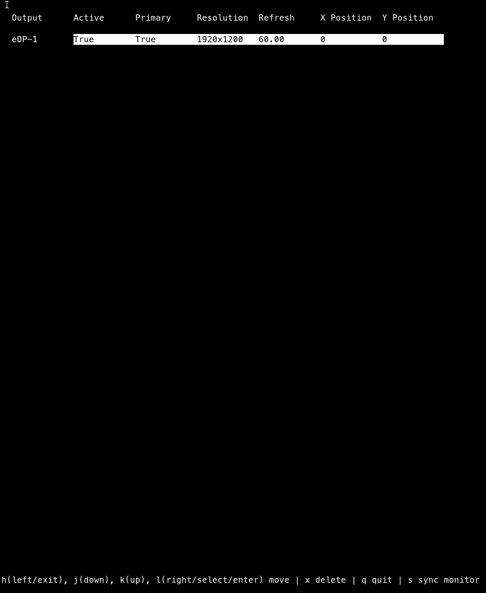
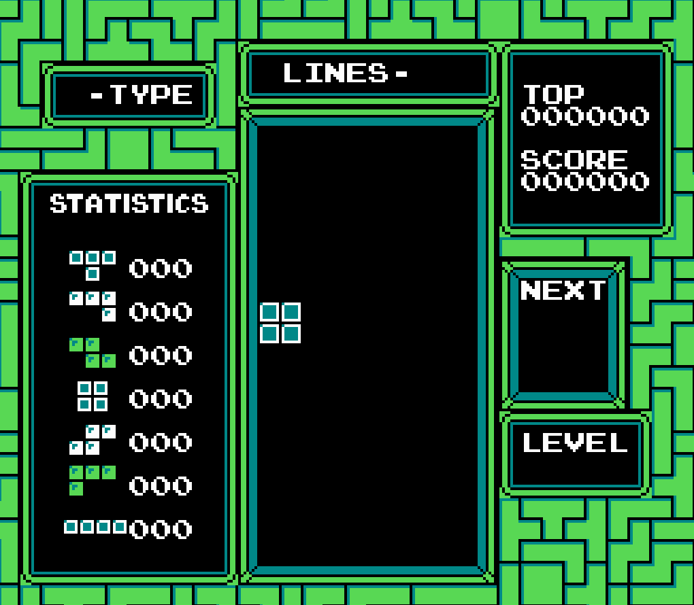

Computer Science · Robotics Research
Teaching legged robots to move through the real world.
I'm a computer scientist with an M.S. from UMass Amherst. I'm a research assistant in the Human-Centered Robotics Lab, working on visual locomotion for quadruped robots.
About
Your photo
I'm a robotics and machine learning researcher. At the Human-Centered Robotics Lab at UMass Amherst, I work on how a quadruped robot can combine visual locomotion skills to handle different terrains, using simulation and real hardware.
I grew up in Lima, Peru, and completed both my B.S. (Cum Laude, Dean's List every semester) and M.S. in Computer Science at UMass Amherst. My coursework spans robotics, machine learning, NLP, computer architecture and cryptography. Before research, I worked as a software engineering intern building and containerizing APIs.
Right now, I'm working with PhD student Shauna Choi on flow co-policies for high-level robot control, and my paper on multi-terrain quadruped locomotion is under review at ICRA.
LocationAmherst, MA
EducationM.S. Computer Science
LanguagesEnglish, Spanish
Selected Work

pylora
A simple implementation of LoRA (low-rank adaptation) in Python using PyTorch.
View on GitHub →
Publications
Submitted Sept 2026
Route or Distill? Rethinking Visual Skill Integration for Multi-Terrain Quadruped Locomotion
O. Youngquist, P. Ghezzi, H. Zhang
Submitted to ICRA, under review.
Skills & Tools
Python
C++
Java
PyTorch
ROS2
Isaac Sim
Genesis
Unitree Go2
Legged locomotion
Policy distillation
Depth-based perception
Git
Linux
Docker
Experience
Jun 2025 — Present
Research Assistant
Human-Centered Robotics Lab (PI: Hao Zhang), UMass Amherst
Built and evaluated lightweight terrain-based routing that composes frozen visual locomotion specialists for a quadruped through a supervised terrain classifier, with no additional locomotion-policy optimization. Also collaborating on flow co-policies for high-level robot control.
Dec 2023 — Jan 2024
Software Engineering Intern
Silabuz, Lima, Peru
Sole developer and maintainer of an API. Replaced web scraping with official service APIs for reliability, and containerized the app with Docker for consistent development and deployment.
Jun — Jul 2021
Freelance Consultant
Pedro Baumann, Developer Recruitment, Lima, Peru
Built a large dataset and tooling for a software company's recruitment process, and reviewed software solutions submitted by candidates.
Jan — Feb 2019
Software Engineering Intern
Horses Developer, Lima, Peru
Completed an independent project while mentored by experienced developers.
Graduated Feb 2026
M.S. in Computer Science
University of Massachusetts Amherst
GPA 3.87. Coursework: Robotics, Advanced NLP, Computer Architecture, Cryptography, Computational Biology.
Graduated Jan 2025
B.S. in Computer Science
University of Massachusetts Amherst
GPA 3.91, Cum Laude, Dean's List every semester.